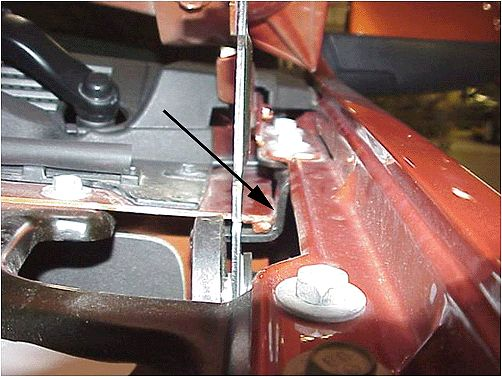
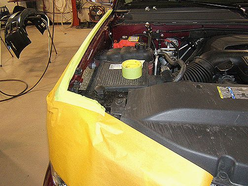
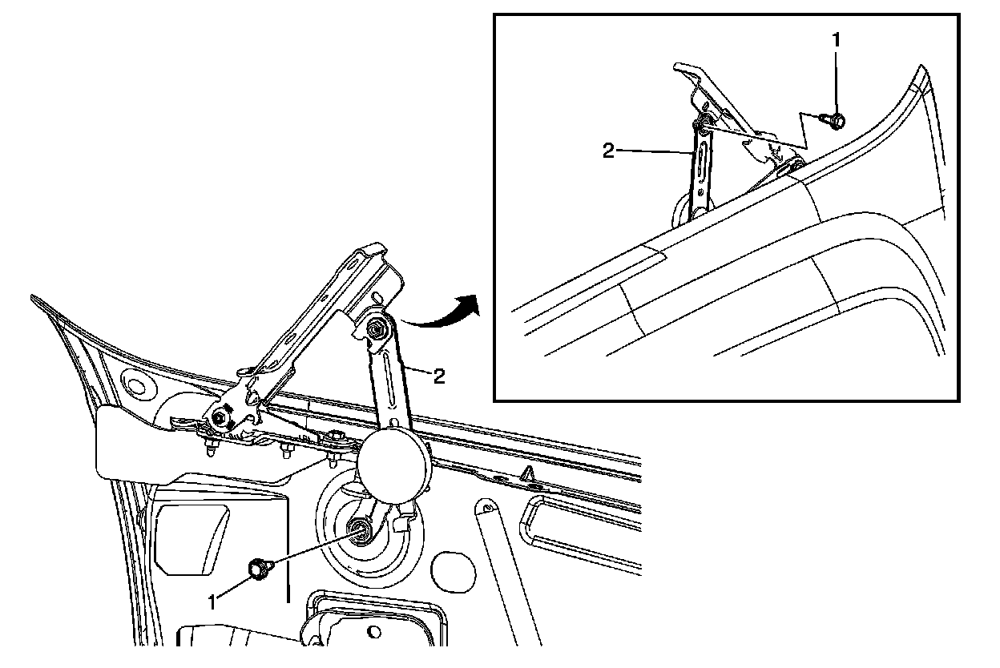
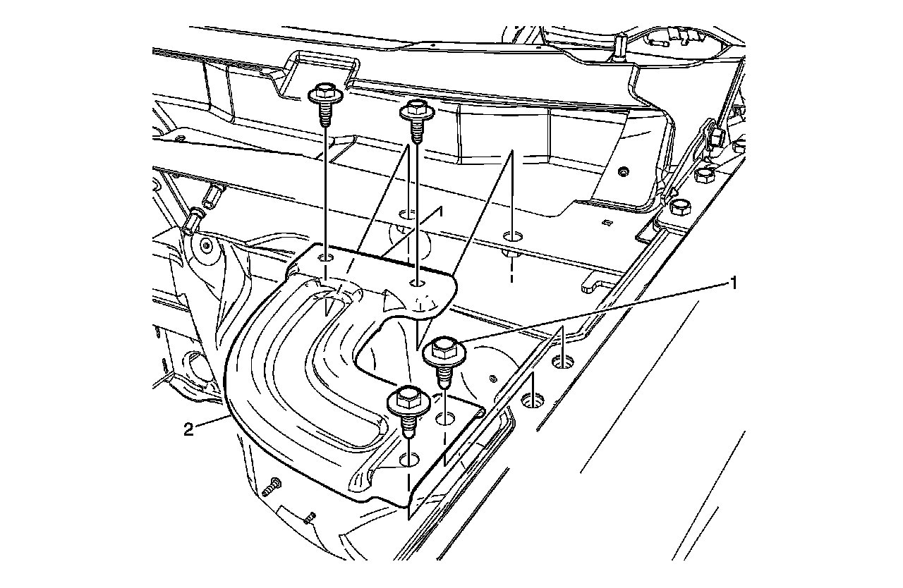
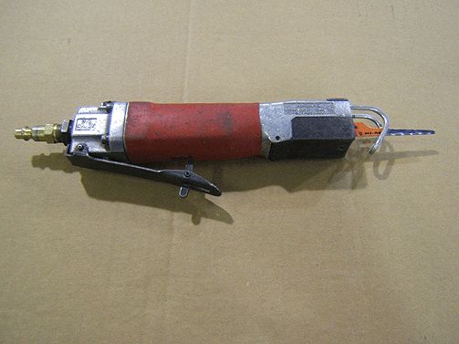
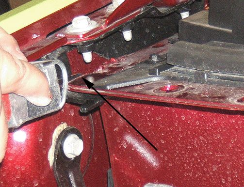
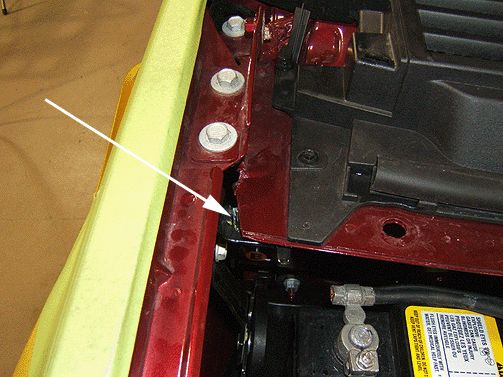

Body - High Pitched Squeak Noise At Left/Right A-Pillar
TECHNICALBulletin No.: 09-08-63-004
Date: April 23, 2009
Subject: High Pitched Squeak Noise at Left or Right Side of Vehicle, Lower A Pillar Area (Revise Upper Outer Plenum to Create Clearance to Fender Bracket)
Models:
2007-2009 Cadillac Escalade, Escalade ESV, Escalade EXT
2007-2009 Chevrolet Avalanche, Silverado, Suburban, Tahoe
2007-2009 GMC Sierra, Yukon, Yukon XL
Condition
Some customers may comment about a high pitched squeaking noise coming from the outer upper instrument panel area, the outer lower windshield area or at the base of the A pillar. This condition may be observed on the left or right side of the vehicle.
Cause

This condition may be caused by the front fender upper bracket coming into contact with the upper plenum flange. This contact condition may cause a high pitched squeaking noise when driving.
Correction
Use the following steps to revise the upper plenum flange on the affected side of the vehicle. This revision will allow sufficient clearance between the fender bracket and the flange.

1. Protect the outer sheet metal by covering the work area with fender covers or masking paper.
Warning
When a hood hold open device is being removed or installed, provide alternate support to avoid the possibility of damage to the vehicle or personal injury.
2. Prop the hood open with a suitable prop rod.

3. Remove the bolt connecting the hood open assist spring to the hood hinge (1). Allow the spring assembly to drop out of the work area.

4. Remove the four bolts that retain the rear upper fender bracket to the body (1) and remove the bracket (2).
Note
The hood does not need to be removed.


5. Trim the upper plenum flange as shown. Use an air powered saw with a metal cutting blade as illustrated.

6. A minimum clearance of 5.0 mm ( 7/32 in) needs to be created between the flange and the fender bracket.
7. After the cut has been made, use a vacuum cleaner to remove the metal shavings from the work area.
8. Restore the corrosion protection to the repair area. Refer to Anti-Corrosion Treatment and Repair in SI.
9. Touch up the paint on the repair area. For the proper refinish materials to use, refer to the GMWI5406 GM Globally Approved Refinish Materials Information. The refinish materials information is now online at the GMGOODWRENCH WEB SITE*. Painted books have been discontinued. To access the site, follow these steps:
- Go to GM web site.
- Click on GM Technical Repair Information.
- Click on For Body Shop & Service link at the bottom of the page.
- Click on Paint Shop tab.
- * In Canada, the GM Approved Refinish Materials Booklet is also available in GM GlobalConnect by choosing LIBRARY, SERVICE and then PAINT SHOP.
10. Reinstall the bolt connecting the hood open assist spring to the hood hinge.
Tighten
Tighten the bolt to 22 Nm (16 lb ft).
11. Reinstall the four bolts retaining the rear upper fender bracket to the body.
Tighten
Tighten the bolts to 9 Nm (80 lb in).
Warranty Information
For vehicles repaired under warranty, use the table above.

Disclaimer